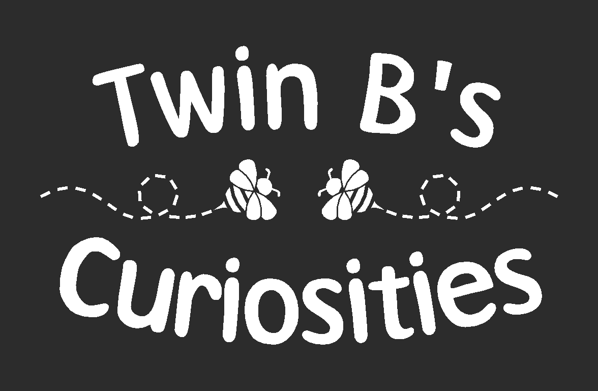
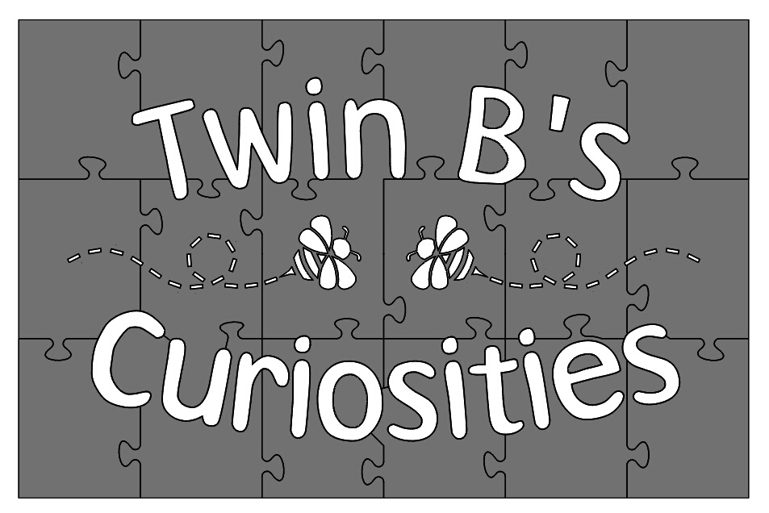
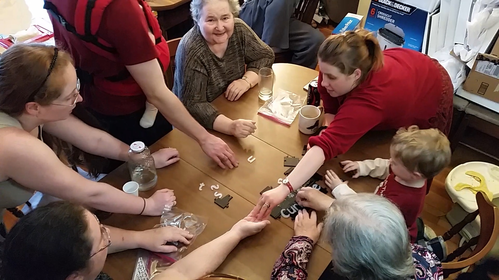
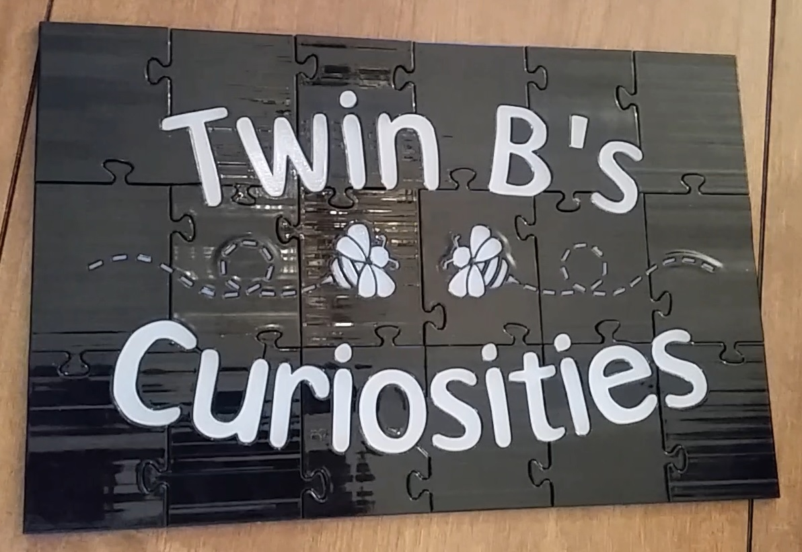

Twin B's Curiosities Puzzle
Inception
This was a personal project to make a gift for my grandmother and her twin sister. I also turned it into a one-time experience for my whole family to participate in, including my then-three-year-old nephew, who was just getting into jigsaw puzzles.
Concept
A jigsaw-type puzzle whose completed form could serve as the sign on the front door of a small family business. My grandmother and her identical twin sister, whose names both begin with the letter B, had been talking for years about starting a little curiosity shop in their retirement. The name they settled upon for that shop was "Twin B's Curiosities".
Tools
|
Materials
|
Method
- Draw original bee logo 
- Design interlock features 
- Experiment to evaluate the tolerances of features produced by the 3D printer.
- Print parts.
- Clean off support material with water blaster.
- Delivery
- Assembly
These results were used to determine final size tweaks on the individual piece parts so that they would fit together with just the right feel.
With that, the object was created, and required only delivery and final assembly -- the stages of the process that would transform this project into a shared experience.
I gift-wrapped the pieces individually, addressing each to various members of my family. This was at Christmastime, which my family celebrates as a gift-giving holiday, despite not all being Christian. Each piece was opened one at a time by different family members over the course of a long morning of gift exchanges. I told them that the pieces would come together to form a gift for two of the people present, but never said which two.
When the pieces were all unwrapped, we took a break from the gift exchange and gathered around a table. There, four generations of my family -- led, I like to think, by my then-three-year-old nephew -- together solved the puzzle, revealing the gift for our two eldest family members.
 Next Steps
This project is complete as it stands. They framed the puzzle, and it will finally serve its first use as a business sign later this year. I told my grandmother and my great aunt that I would be happy to help them with design, logo, and signage support for their curiosity shop at any time.